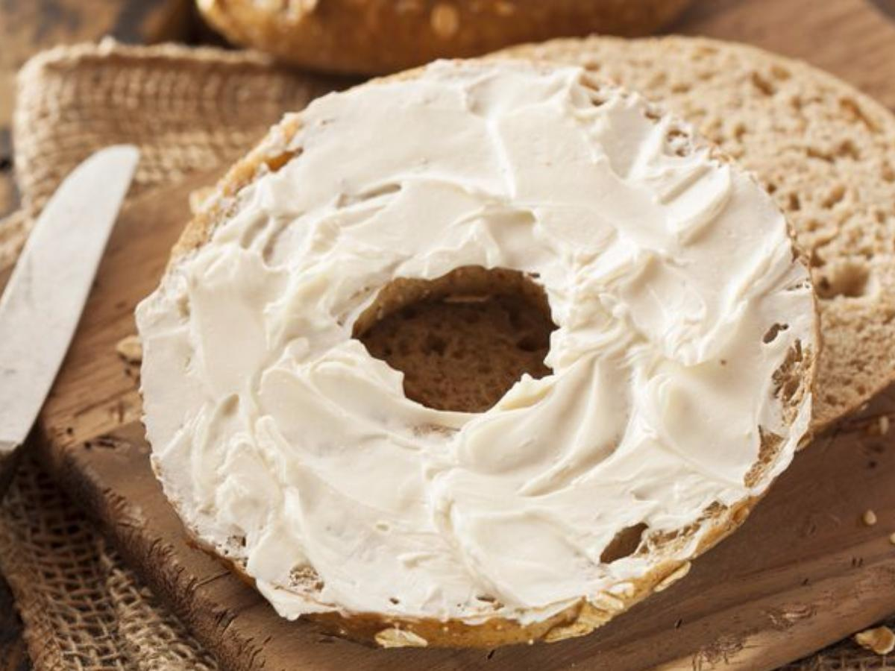

Bagel and Cream Cheese

Description
The bagel and cream cheese is a common tasty breakfast food. Bagels are very easy to make, and there are many
different types to can try.The most basic and known way to eat a bagel is to toast it a spread some cream Cheese
over it and enjoy. There are more complicated ways to eat a bagel and some are pretty tasty, however we can save
those recipes for another time. This recipe is very easy to make and very delicious for the small amount of time
it takes to make them. If you've been on the hunt for a good bagel recipe that comes together in the same day,
i can assure you that you have come to the right place.
ingredients
- 1 ¼ cups cool water
- 1 ¾ teaspoons salt
- 1 ½ teaspoons instant yeast
- 4 cups bread flour
- 5 cups water
- 1 tablespoon brown sugar
- 1 tablespoon baking soda
Steps
-
To make the starter, mix all of the ingredient together in a small bowl, cover with plastic wrap, and allow
it to sit at room temperature overnight (12 to 24 hours).
-
To make the dough, add all of the starter, after it's overnight rest, the water, salt, yeast, and half of
the bread flour called for. Using the dough hook of your stand mixer, mix these ingredient for 5 minutes.
-
Continue adding the rest of the bread flour, ¼ cup at a time, until the dough starts to come together.
The dough should still stick to the bottom of the bowl but it will pull away from the sides.
-
Turn the dough onto a lightly floured surface and knead until the dough is lightly tacky. Form into a ball.
Let the dough rise in a lightly greased bowl for one hour.
-
Gently deflate the dough and let it rise for another half hour.
-
When the dough has risen a second time, remove it from the bowl and cut it into 12 equal pieces. Roll each
piece into a round ball. Cover the balls with plastic wrap and allow to rest for 30 minutes.
-
While the dough is rising, prep the water for boiling. Mix the water and brown sugar in a large pot. The
water needs to be at least one inch deep.
-
Heat the water in the pan over medium heat until it starts to gently boil and the baking soda dissolves.
Reduce the heat so that the water stays at a very gentle boil. Preheat the oven to 425 degrees F and line
a baking sheet with parchment or a baking mat.
-
Take one piece of dough and poke your finger through the center. Using your finger gently stretch the hole
in the center until it is about a 2 inch circle. Repeat with the remaining dough.
-
Gently drop 2 or 3 bagels in the boiling water and let them boil on the first side for 2 minutes and then
flip them over in the water and let them cook on the second side for 1 more minute. Remove from the water
with a strainer or the end of a wooden spoon and place the bagels on the parchment lined baking sheet.
Repeat the boiling with the remaining bagels.
-
While the bagels are still wet you can sprinkle them with everything bagel seasoning if you like.
-
Bake the boiled bagels in the hot oven for 25 minutes or until they are a deep brown.
-
Let the bagels cool on a wire rack before enjoying.